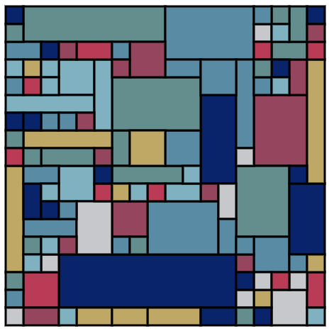

Random Grid

My goal with this sketch was to create an algorithm that could fill any rectangle with randomly sized smaller rectangles.
See a randomly generated output here. See the code here.
Generative Art in Vanilla JavaScript
I wanted to challenge myself here. While I find p5.js to be very useful and a lot of fun, I wanted to know what it would take to create a program that renders SVG without the use of an external library.
See a randomly generated output here. See the code here.